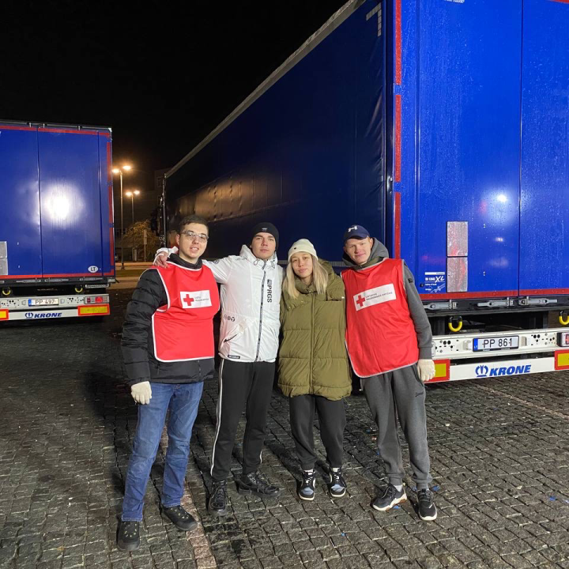

My first Help
On February 27, I occasionally saw my friend's story that the Red Cross collected things for refugees from Ukraine and sent them to Poland. Without thinking, I went as a volunteer to help, because it was the first opportunity for me to somehow help Ukraine and its citizens.
Also, LCC Students from different countries came and participated there all day. Especailly for me, it was useful to ignore news for the whole day, since I always was into them at that time.
In total, we loaded up 4 truckloads of first aid supplies in one day! And during that process, one of LCC Students from Ukraine gave me idea ...
Let's see what they got